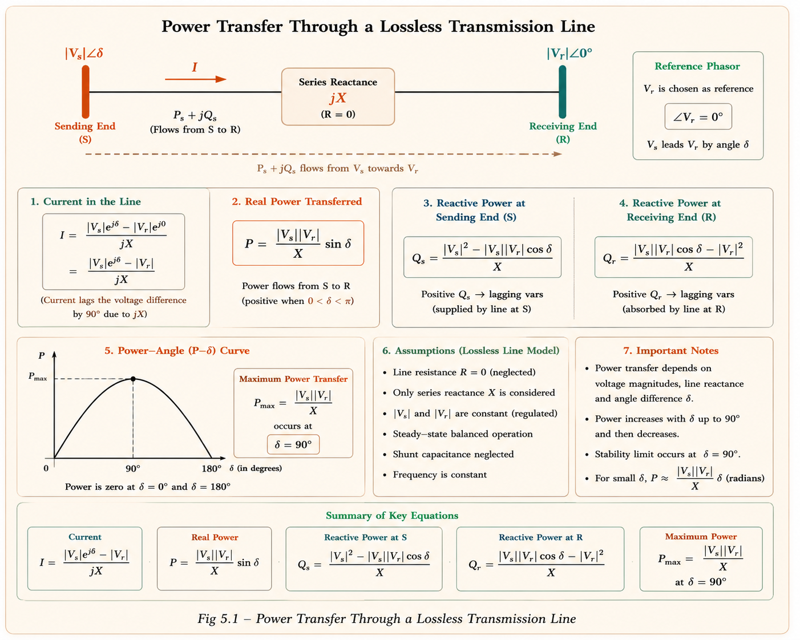
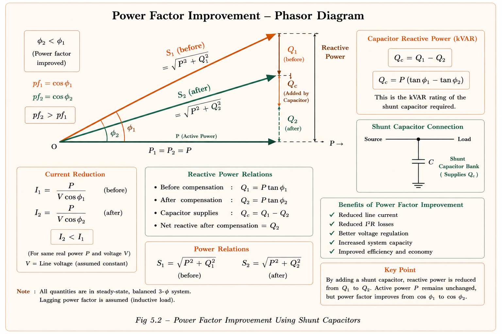
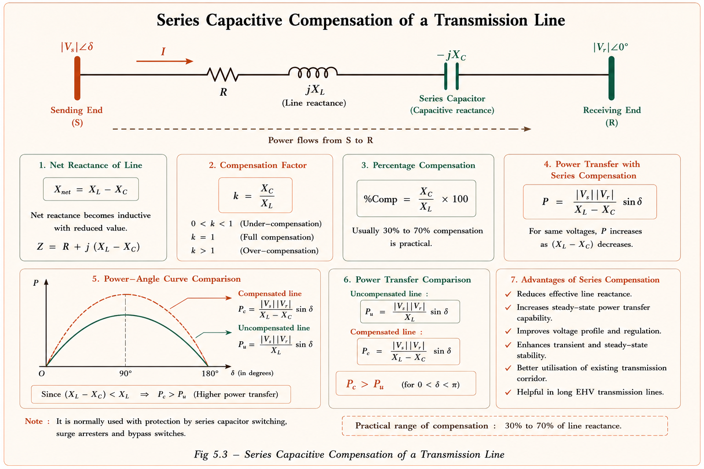
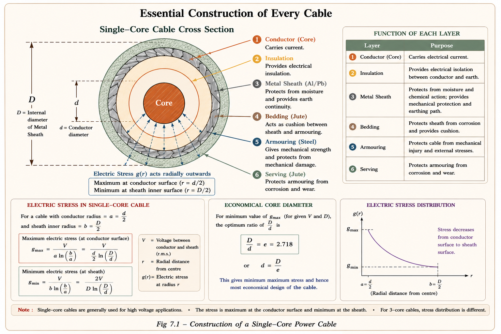
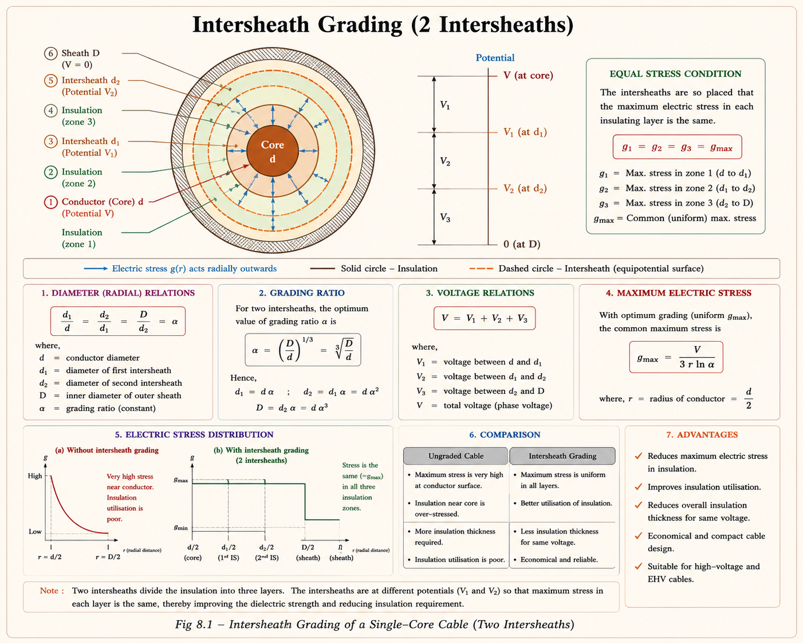

Master voltage regulation, reactive compensation devices — shunt capacitors, shunt
reactors, series capacitors, synchronous condensers — and the complete theory of underground cables.
High-yield GATE and IES topics with deep conceptual derivations, SVG diagrams, and PYQs.
GATE EEIES/ESEPSU InterviewACE Academy NotesCh. 2 — Pages 42–52
Course Progress
Ch 2 / 10
01
Why Reactive Power Matters
Imagine you order a glass of beer at a restaurant. The glass contains actual beer (the useful part) and
foam at the top (the useless part that takes up space). In electrical engineering, real power
(P) is the beer — it does actual work. Reactive power (Q) is the foam — it
sloshes back and forth between source and load, doing no net work but occupying current-carrying
capacity in every wire and transformer.
Every induction motor, transformer, and fluorescent light ballast in the grid demands this foam.
If you don't manage it, your voltage profile collapses, lines overheat, and the grid becomes unstable.
Reactive power control is therefore the art of minimising the foam while maintaining healthy voltages
everywhere.
⚡
The Fundamental Problem
Reactive power cannot be transmitted economically over long distances — each km of line consumes
reactive power proportional to \(I^2 X_L\). The solution is to generate Q
locally, close to the load, using compensation devices.
Reactive Nature of Electrical Equipment
Understanding which equipment absorbs Q (sink) and which generates Q (source) is the first step. The
table below is a high-frequency GATE topic:
Equipment
Reactive Power Nature
Condition
Induction Motor
Absorbs Q (Sink)
Always — needs magnetising current
Transformer
Absorbs Q (Sink)
Always — due to leakage reactance
Transmission Line
Sink
Loading > SIL (heavy load)
Transmission Line
Source
Loading < SIL (light/no load) — Ferranti effect
Underground Cable
Always Source
High charging capacitance dominates
Sync. Generator (Over-excited)
Source of Q (lagging pf)
|E| > |V|
Sync. Generator (Under-excited)
Sink of Q (leading pf)
|E| < |V|
Sync. Motor (Over-excited)
Source of Q (leading pf)
|E| > |V|
Sync. Motor (Under-excited)
Sink of Q (lagging pf)
|E| < |V|
💡
Memory Anchor
"GUM" — Generator Under-excited → Must absorb Q. Generator Over-excited → Must
supply Q. Same logic applies to synchronous motors but roles swap.
02
Reactive Power — Core Theory & Voltage Relationship
The Receiving End Voltage Equation
Consider a simple lossless line with series reactance \(X\) connecting a sending end
\(|V_s|\angle\delta\) to a receiving end \(|V_r|\angle 0°\). The complex power at the sending end is:
Sending End Complex Power
\[\bar{S}_s = P_s + jQ_s = \bar{V}_s \bar{I}_s^*\]
After expanding (derivation shown below), the reactive power at the sending end simplifies — assuming the
system is stable so \(\cos\delta \approx 1\) — to:
Net Reactive Power & Receiving End Voltage
\[Q_s = \frac{|V_s|}{X}\bigl(|V_s| - |V_r|\bigr)\]
\[\boxed{|V_r| = |V_s| - \frac{X}{|V_s|} Q_s}\]
This is the single most important equation in reactive power control. It tells us:
When \(Q_s > 0\) (net reactive power flowing into the line from source), \(|V_r| < |V_s|\) —
voltage drops.
When \(Q_s < 0\) (net reactive power returning to source), \(|V_r| > |V_s|\) — voltage rises
(Ferranti-like condition).
To raise \(|V_r|\) without changing \(|V_s|\): inject reactive power at the load bus
(reduce \(Q_s\)).

Fig 2.1 — Simple lossless transmission line model for reactive power analysis
Complete Derivation of the Voltage Equation
Starting from the definition of complex power at the sending end:
A shunt capacitor is connected in parallel with the load. Think of it as a local Q-factory: it generates
leading reactive power right at the load bus, so the line upstream no longer needs to carry that Q from
the distant generator. The result is reduced line current, improved voltage profile, and lower losses.
🎯
Key Insight
A shunt capacitor is primarily a power factor correction device, not a voltage
control device. The improvement in power factor is much larger compared to the improvement in
voltage. It does not change real power demand.
Before & After — Voltage Profile
Without the shunt capacitor, the full reactive load current flows from the source through the line:
It is economical to keep \(|V_{r2}| \leq |V_s|\). Compensating fully so \(|V_{r2}| =
|V_s|\) requires an extremely large (and expensive) capacitor bank, since \(Q_s\) must
become zero.
Reactive Power Supplied by Shunt Capacitor
When power factor is improved from \(\phi_1\) to \(\phi_2\) for a load consuming real power
\(P\):
Shunt capacitors are almost always connected in delta configuration in
practice (not star), because delta connection gives a 3× higher Q for the same capacitor
value.

Fig 3.1 — Phasor diagram showing power factor improvement from φ₁ to φ₂.
The capacitor supplies Qcap = Q₁ − Q₂ = P(tanφ₁ − tanφ₂)
04
Shunt Reactor — Ferranti Effect Control Device
The Ferranti effect is the rise in receiving-end voltage above the sending-end voltage when a long
transmission line operates at light or no load. This happens because a lightly loaded line behaves as a
capacitor — its distributed charging capacitance generates reactive power that raises the receiving end
voltage dangerously.
🔴
Ferranti Effect — Physical Cause
At no-load, the line charging current \(I_C = V \cdot \omega C\) flows through the line
inductance \(L\), creating a voltage rise. For a 400 kV line, an uncompensated no-load receiving
end can reach 420–440 kV — well above equipment ratings.
The shunt inductor is connected at the receiving (load) bus when the line is lightly loaded. It absorbs
the excess reactive power, bringing the voltage back to nominal. However, a shunt reactor only helps
when the load is leading (capacitive), which is rarely the case in normal operation — hence it
is purely a Ferranti effect control device.
A series capacitor is inserted in series with the transmission line. It does not inject reactive
power in the same way a shunt capacitor does — instead, it reduces the effective inductive
reactance of the line. Since maximum power transfer \(P_{\max} =
|V_s||V_r|/X_{\text{eff}}\), reducing \(X\) directly raises power transfer capability.

Fig 5.1 — Transmission line with series capacitor. The net reactance becomes (X_L −
X_C), boosting power transfer.
Series Compensation Formulae
\[\text{Percentage series compensation} = \frac{X_C}{X_L} \times 100\%\]
\[P_{\max(\text{new})} = \frac{|V_s||V_r|}{X_L - X_C} = \frac{P_{\max(\text{old})}}{1 -
\frac{X_C}{X_L}}\]
\[Q_{\text{sercap}}/\text{ph} = I^2 X_C/\text{ph}\]
\[\Delta V_C = I X_C \sin\phi_r \quad \text{(voltage boost due to series cap)}\]
Advantages & Dangers of Series Capacitor
Advantages
▸Maximum power transfer capability increases significantly
▸Steady-state stability limit (SSSL) improves
▸Voltage regulation improves at load buses
▸Lower reactive power required for same voltage boost vs shunt cap
Dangers
▸Fault level in the system increases — equipment must be rated
higher
▸During fault, large voltage appears across capacitor → may damage
it
▸Protected using a spark gap across series cap
▸Subsynchronous resonance (SSR) — shaft of
alternator may be damaged at resonant frequency \(f_r = f\sqrt{X_C/X_L}\)
Shunt vs Series Capacitor — GATE Favourite Comparison
Parameter
Shunt Capacitor
Series Capacitor
Voltage distribution
Uniform along line
Sudden boost at point of insertion
Stability
No improvement
Improves stability
Power factor
Improves load pf
No improvement in pf
Reactive power (same ΔV)
Higher rating needed
Lower rating needed
100% compensation risk
Safe
Series resonance at 50 Hz → dangerous
Use case
Load end power factor correction
Long line stability, heavy load
06
Synchronous Condenser, Coil & Phase Modifier
Synchronous Condenser (Capacitor)
A synchronous condenser is an over-excited synchronous motor running at no load. Since
it has no mechanical load, the real power it draws is nearly zero (only enough to cover copper and iron
losses). However, in the over-excited state \(|E| > |V|\), it injects reactive power (leading
current) into the bus — behaving exactly like a capacitor, but with continuously variable and smooth
output.
Reactive Power Supplied by Synchronous Condenser
\[Q_{SM}(\text{supply}) = \frac{|V|}{X_s}\bigl(|E| - |V|\bigr) \quad \text{when } |E| > |V|\]
\[Q_{\text{syncond}} = P(\tan\phi_1 - \tan\phi_2)\]
Power factor of synchronous condenser
\[\text{pf} = \text{ZPF lead}\]
Synchronous Coil (Inductor)
A synchronous coil is an under-excited synchronous motor running at no load. In this
state \(|E| < |V|\), it absorbs reactive power from the bus — behaving like an inductor or shunt
reactor. It is used as a Ferranti effect control device just like the shunt reactor.
Reactive Power Absorbed by Synchronous Coil
\[Q_{SM}(\text{abs}) = \frac{|V|}{X_s}\bigl(|V| - |E|\bigr) \quad \text{when } |E| < |V|\]
\[\text{pf}=\text{ZPF lag}\]
🔑
Key Difference — Shunt Cap vs Synchronous Condenser
Shunt Capacitor: Step (discrete) control, low cost, no real power loss,
no stability effect, no fault current change. Synchronous Condenser: Smooth (continuous) control, high cost, real
power loss (mechanical losses), raises fault levels, may lose synchronism on voltage
swings.
Synchronous Phase Modifier
A loaded synchronous motor with over-excitation is called a synchronous phase
modifier. Unlike the condenser, it draws real power from the bus to drive a mechanical load
while simultaneously injecting reactive power.
Phase Modifier Power Equations
\[P_{PM} = \frac{|E||V|}{X_s}\sin\delta, \quad Q_{PM} = \frac{|V|}{X_s}\bigl[|E|\cos\delta -
|V|\bigr]\]
\[\text{Phase modifier injects Q only when } |E|\cos\delta > |V|\]
\[Q_{PM}(\text{supply}) = P_1\tan\phi_1 - P_2\tan\phi_2\]
Complete Comparison — All Reactive Compensation Devices
Device
Q Nature
Control
Cost
Stability
pf
Primary Use
Shunt Capacitor
Source
Step
Low
No change
Improves
Load end pf correction
Shunt Reactor
Sink
Step
Low
No change
—
Ferranti control
Series Capacitor
Source
Fixed
Medium
Improves
No change
Long line stability
Sync. Condenser
Source (OE)
Smooth
High
Raises fault level
ZPF lead
Bus voltage control
Sync. Coil
Sink (UE)
Smooth
High
Raises fault level
ZPF lag
Ferranti control
Sync. Phase Modifier
Source (OE)
Smooth
High
Raises fault level
Leading
Loaded bus pf correction
07
Underground Cables — Construction & Theory
An underground cable is a conductor surrounded by successive layers of insulation and protection,
designed to carry power beneath the ground surface. Unlike overhead lines, cables have very high
capacitance (due to the proximity of conductor and sheath), negligible inductance, and always act as
reactive power sources.
Essential Construction of Every Cable

Fig 7.1 — Cross-section of a single-core cable showing all layers. 'd' = conductor
diameter, 'D' = internal sheath diameter.
Classification by Voltage Level
Class
Voltage Range
Insulation Method
Low Tension (LT)
Up to 1 kV
Rubber / PVC
High Tension (HT)
Up to 11 kV
Impregnated paper
Super Tension (ST)
22 kV – 33 kV
Impregnated paper + oil
Extra High Tension (EHT)
33 kV – 66 kV
Oil-filled / gas pressure
Extra Super Voltage (ESV)
Beyond 132 kV
Oil-filled or compressed gas
Insulation Resistance of a Single-Core Cable
The insulation resistance is not the resistance of the conductor — it is the resistance offered by the
dielectric material between the conductor and the sheath, measured radially. It is inversely
proportional to the cable length:
Insulation Resistance Formula
\[R_i = \frac{\rho}{2\pi\ell}\ln\!\left(\frac{R}{r}\right)\]
where \(\rho\) = resistivity of insulator (Ω·m), \(\ell\) = length of cable (m), \(R\) = internal sheath
radius, \(r\) = conductor radius.
\[\text{Note: } R_i \propto \frac{1}{\ell}\]
Capacitance of a Single-Core Cable
The cable acts as a coaxial capacitor with the conductor as the inner plate and the metallic sheath as
the outer plate, with the dielectric as the insulator between them:
Cable Capacitance Formula
\[C = \frac{2\pi\varepsilon_0\varepsilon_r}{\ell\ln(R/r)} \text{ F/m}\]
where \(\varepsilon_0 = 8.854 \times 10^{-12}\) F/m (permittivity of free space), \(\varepsilon_r\) =
relative permittivity of insulation.
💡
Why Cables Always Generate Q
The insulation charging current \(I_C = V / (1/\omega C) = \omega CV\) always flows, regardless
of load. This current leads the voltage by 90° and represents reactive power generated
by the cable. For a 132 kV cable 10 km long, \(Q_{\text{generated}}\) can exceed the load Q
requirement — hence cables "over-compensate" and must be paired with shunt reactors.
Power Factor of a Cable
The dielectric of a cable is not a perfect insulator — it has a small conductance \(G\) that causes a
tiny in-phase leakage current alongside the main capacitive charging current. The angle \(\delta\)
between the total current and the 90° position is the loss angle:
Cable Power Factor
\[\cos\phi = \cos(90° - \delta) = \sin\delta \approx \tan\delta = \delta \quad (\text{for small
}\delta)\]
\[\delta = \frac{V/R_i}{V\cdot\omega C} = \frac{1}{\omega C R_i} = \frac{G}{\omega C}\]
\[\therefore \text{ Power factor of cable} = \frac{G}{\omega C}\]
Capacitance in a 3-Core Cable
A 3-core cable is more complex because there is capacitance between cores (\(C_C\)) and also between each
core and the sheath (\(C_S\)). Two measurement methods are used in practice:
Dielectric Stress, Grading & Most Economical Radius
The electric field (stress) inside a cable's insulation is not uniform — it is highest at the conductor
surface and decreases logarithmically towards the sheath. If the maximum stress exceeds the dielectric
strength, the insulation breaks down. Cable design is about distributing this stress as uniformly as
possible.
Electric Field at Any Point x (Conductor at r, Sheath at R)
\[E_x = \frac{V}{x \ln(R/r)} \text{ kV/cm}\]
\[E_{\max} = \frac{V}{r\ln(R/r)} \quad \text{(at conductor surface, }x = r\text{)}\]
\[E_{\min} = \frac{V}{R\ln(R/r)} \quad \text{(at sheath surface, }x = R\text{)}\]
⚠️
Key Observation — Stress Distribution
Stress is maximum at the conductor surface and minimum at the sheath
surface. The ratio \(E_{\max}/E_{\min} = R/r\). For a thin conductor (small r) with
thick insulation (large R), this ratio becomes very large — meaning most of the insulation near
the sheath is underutilised while the thin layer near the conductor is overstressed.
Most Economical Radius of Core
To minimise \(E_{\max}\) for a given operating voltage \(V\) and external sheath radius \(R\),
differentiate \(E_{\max} = V/[r\ln(R/r)]\) with respect to \(r\) and set to zero:
This is the radius of core that minimises peak electrical stress. Designing with \(r = 0.368R\) gives the
most economical use of insulating material.
Intersheath Grading
To distribute stress uniformly, metallic cylindrical inter-sheaths are inserted in the dielectric. Each
inter-sheath is held at an intermediate potential, so the radial stress in each layer becomes equal.
With two inter-sheaths (three layers):

Fig 8.1 — Intersheath grading with 2 intersheaths. Potentials V₁, V₂ are chosen so
g₁max = g₂max = g₃max
Instead of metallic inter-sheaths, capacitance grading uses dielectric materials of different
permittivities in successive layers. The layer near the conductor has the highest
permittivity \(\varepsilon_{r1}\), and the outer layer has the lowest \(\varepsilon_{r2}\). This
makes the displacement \(\varepsilon E\) more uniform, reducing peak stress.
Capacitance Grading Formula (2 dielectrics)
\[g_{1\max} = \frac{2V}{d\!\left[\ln(d_1/d) + \frac{k_1}{k_2}\ln(D/d_1)\right]}\]
where \(k_1 = \varepsilon_{r1}\) and \(k_2 = \varepsilon_{r2}\) are the relative permittivities.
09
Numerical Examples
EX 2.1Industrial Substation — Shunt Capacitor Power Factor (ACE Academy)
An industrial substation has a 4 MW load. A capacitor of 2 MVAR is installed to
maintain load power factor at 0.97 lag. If the capacitor bank is out of service, find the load
power factor.
Solution
S1
Use the formula: \(Q_{\text{shcap}} = P(\tan\phi_1 - \tan\phi_2)\). Here
\(Q_{\text{shcap}} = 2\) MVAR, \(P = 4\) MW, \(\phi_2 = \cos^{-1}(0.97)\).
S2
\(\tan\phi_2 = \tan(\cos^{-1}0.97)\). Since \(\cos\phi_2 = 0.97\),
\(\sin\phi_2 = \sqrt{1-0.97^2} = 0.2431\), so \(\tan\phi_2 = 0.2431/0.97 = 0.2506\).
\(\phi_1 = \tan^{-1}(0.7506) = 36.87°\) → Power factor without capacitor \(=
\cos(36.87°) = \mathbf{0.8 \text{ lag}}\)
EX 2.2Shunt Reactor Rating at Reduced Voltage (ACE Academy)
In a 400 kV power network, 360 kV is recorded at a 400 kV bus. The reactive power
absorbed by a shunt reactor rated for 50 MVAR, 400 kV connected at the bus is ___.
Solution
S1
Key relation: \(Q_{\text{reactor}} \propto V^2\). At rated voltage 400 kV,
\(Q_{\text{rated}} = 50\) MVAR.
Both \(Q_{\text{shcap}} \propto V^2 f\) and \(Q_{\text{shind}} \propto
V^2/f\). For same frequency but different voltage, both scale as \(V^2\). This is a
recurring GATE trap — don't confuse the two formulas.
EX 2.3Series Compensation and Stability Limit (ACE Academy)
The steady state stability limit of a transmission line is 400 MW. If 30% series
compensation is added, find the new SSSL. (Resistance and capacitance neglected; voltages at
both ends unchanged.)
EX 2.4Single-Core Cable — Insulation Resistance at Most Economical Radius
A single-core cable, length 5 km, core diameter 2 cm, cable diameter 4 cm.
Resistivity of dielectric = \(1.6 \times 10^{12}\) Ω·m, \(\varepsilon_r = 4\). Find insulation
resistance for most economical radius of core.
Solution
S1
Most economical radius: \(r/R = 1/e \Rightarrow r = R/e = 2/2.718 = 0.736\)
cm. But we're given cable diameter = 4 cm, so \(R = 2\) cm (internal sheath radius).
EX 2.5Synchronous Motor as Phase Modifier (ACE Academy)
An induction motor operating at 0.8 pf lag consuming 300 kW. A zero real power
synchronous motor is connected across it to raise the pf to 0.92 lagging. The reactive power
drawn by the synchronous motor is:
Solution
S1
The synchronous motor supplies lagging reactive power (leading reactive power
absorption means it supplies leading vars = lagging supply). Here it supplies
leading reactive power to improve the circuit pf.
The synchronous motor draws 97.2 kVAr lead from the
circuit's perspective (leading current = lagging reactive power absorption → the motor is
over-excited). Answer: 97.2 kVAr lead.
10
GATE & IES Previous Year Questions
GATE EEA synchronous machine connected to an infinite bus operates at unity power
factor. To raise its terminal voltage above the infinite bus voltage, it should be:GATE 2019
(a) Under-excited as a generator
(b) Over-excited as a generator
(c) Under-excited as a motor
(d) Operated at unity pf always
✓ Answer: (b)
An over-excited synchronous generator supplies reactive
power (Q) to the bus. From \(|V_r| = |V_s| - (X/|V_s|)Q_s\), injecting Q reduces the net \(Q_s\)
seen by the line, raising \(|V_r|\). Over-excited generator → source of Q → raises bus voltage.
GATE EEIf a line is 100% series compensated it may result in series resonance
at:GATE 2017
(a) Power frequency (50 Hz)
(b) 100 Hz
(c) 150 Hz
(d) None
✓ Answer: (a)
At 100% series compensation \(X_C = X_L\). Series
resonance \(f_r = f\sqrt{X_C/X_L} = 50\sqrt{1} = 50\) Hz. The line is in series resonance at
power frequency — zero effective impedance → extremely large fault current → catastrophic for
equipment.
IES / ESEA synchronous condenser is essentially an over-excited
synchronous motor running at no load. Its power factor is:IES 2016
(a) Unity pf
(b) Lagging pf
(c) ZPF lead
(d) ZPF lag
✓ Answer: (c)
At no load, real power \(P \approx 0\). Apparent power
\(S = Q\) entirely. Over-excited → supplies Q (leading vars). Leading Q means leading current,
so power factor = ZPF lead (zero power factor, current leading voltage by 90°).
GATE EEThe maximum stress in the insulation of a single-core cable occurs at
the:GATE 2015
(a) Surface of the conductor
(b) Surface of the sheath
(c) Mid-radius of insulation
(d) Uniform throughout
✓ Answer: (a)
From \(E_x = V/[x\ln(R/r)]\), stress is inversely
proportional to \(x\). So \(E\) is maximum at smallest \(x = r\) (conductor surface) and minimum
at \(x = R\) (sheath surface).
IES / ESEThe most economical core radius of a single-core cable with
sheath radius R is:IES 2014
(a) 0.5 R
(b) 0.5/e R
(c) R/e = 0.368 R
(d) R/2e
✓ Answer: (c)
Differentiating \(E_{\max} = V/[r\ln(R/r)]\) and setting
to zero gives \(\ln(R/r) = 1\), i.e., \(R/r = e\), so \(r = R/e = 0.368R\).
GATE INSIGHTHigh Probability Topic — Shunt Capacitor Rating Calculation
Questions of the type "A load of P kW at pf cos φ₁ is to be improved to cos φ₂ — find capacitor
rating" appear in almost every GATE exam. The formula \(Q_C = P(\tan\phi_1 - \tan\phi_2)\) must
be recalled instantly. Practice converting pf → angle → tan without a calculator for GATE speed.
Also remember: \(Q \propto V^2\) for both capacitors and reactors — a 10% drop
in voltage means 19% drop in reactive power output/absorption. This is tested indirectly in
network analysis questions.
11
Memory Tricks & Mnemonics
🧠 CIVIL — Capacitor/Inductor Behaviour
▸C-I-V-I-L: In a Capacitor,
I (current) leads V (voltage). In an
Inductor, V leads I.
▸Over-excited machines behave like capacitors → supply leading Q.
Under-excited → behave like inductors → absorb Q.
▸Each step roughly triples the voltage level. Beyond 33 kV, paper
insulation must be oil-impregnated.
⚠️
Common Mistakes — GATE Traps
1. Shunt cap raises pf, not stability. Series cap raises stability, not pf.
Confusing these costs marks.
2. \(Q \propto V^2\) for both shunt caps and reactors. Forgetting the square
when voltage changes is the #1 numerical error.
3. Synchronous condenser pf = ZPF lead (not unity, not lagging). Real power ≈
0.
4. 100% series compensation → resonance at 50 Hz — catastrophic. Series
resonance frequency \(f_r = 50\sqrt{X_C/X_L}\).
5. Most economical radius: \(r = 0.368R\), not \(0.5R\). Forgetting the \(1/e\)
factor is common.
6. Insulation resistance inversely proportional to length — longer cable, lower
\(R_i\). Don't confuse with conductor resistance (which is proportional to length).
All technical content is derived from the following standard textbooks and learning resources. All explanations, derivations, diagrams, and examples are original to Aarova AI.
[1]Stevenson, William D. Elements of Power System Analysis. McGraw-Hill. Used for standard definitions and concepts.
[2]Kothari, D.P. and Nagrath, I.J. Modern Power System Analysis. Tata McGraw-Hill. Used for derivations and analytical concepts.
[3]Wadhwa, C.L. Electrical Power Systems. New Age International. Used for cable grading and shunt/series compensation.
🤖 Ask Aarova AI
Have a doubt about Reactive Power Control or Underground Cables? Ask anything — GATE concepts,
numericals, or exam tips!